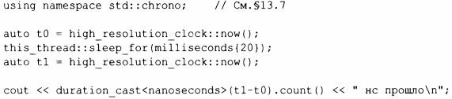
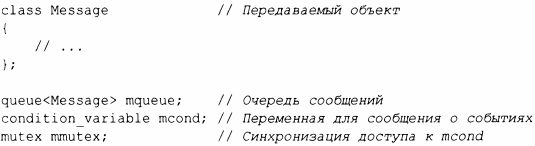
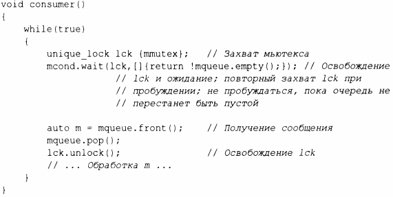
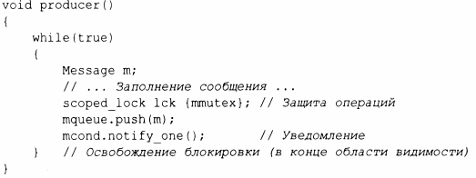

⇐15.5 Совместное использование данных 15.7 Обмен информацией с заданиями⇒
Иногда поток должен ожидать какого-то внешнего события, например завершения задания другим потоком, или пока не пройдет определенное количество времени. Самое простое "событие" - это просто прошедшее время. Используя средства для работы со временем, найденные в заголовочном файле <chrono>, можно написать:
Обратите внимание, что мне даже не надо запускать thread; по умолчанию this thread относится к одному и только к одному потоку.
Я использовал dura tion_cast, чтобы настроить единицы измерения времени в нужные мне наносекунды.
Базовая поддержка взаимодействия с использованием внешних событий обеспечивается условными переменными condition_variable, описанными в заголовочном файле <condition variable>. Такая переменная представляет собой механизм, позволяющий одному потоку ожидать другого. В частности, он позволяет потоку ожидать выполнения некоторого условия (часто называемого событием) в результате работы, выполняемой другими потоками.
condition_variaЫe поддерживает множество форм элегантного и эффективного совместного использования информации, но может быть довольно сложным. Рассмотрим классический пример взаимодействия двух потоков путем передачи сообщений через очередь queue. Для простоты я объявляю очередь и механизм предотвращения условий гонки в этой очереди глобальными для производителя и потребителя:
Типы queue, condition_variable и rnutex предоставляются стандартной библиотекой.
Потребитель consurner() читает и обрабатывает сообщения Message:
Здесь я явно защищаю операции с очередью и условной переменной с помощью блокировки unique_lock для мьютекса. Ожидание condition_variable освобождает свой аргумент-блокировку до тех пор, пока ожидание не закончится (пока очередь не перестанет быть пустой), а затем повторно захватывает ее. Явная проверка условия (в данном случае - !mqueue. ernpty ())защищает от пробуждения просто для того, чтобы обнаружить, что какое-то другое задание пробудилось раньше, так что условие больше не выполняется.
Я использовал unique lock, а не scoped_lock по двум причинам.
С другой стороны, unique_lock может работать только с одним мьютексом.
Соответствующий производитель producer() имеет следующий вид:
